New major release of GRASS GIS
Vaclav (Vashek) Petras
Anna Petrasova
NCSU GeoForAll Lab
at the
Center for Geospatial Analytics
NC State University

NCGIS 2021 Virtual
Vaclav (Vashek) Petras
- BS & MS in Geoinformatics, Czech Technical University in Prague
- PhD in Geospatial Analytics, NC State
- Geospatial Research Software Engineer at NC State
- GRASS GIS Development Team Member
- GRASS GIS Project Steering Committee Member
- Open Source Geospatial Foundation Charter Member
Community & Shared Improvements
- GRASS GIS community:
- Provides software to the public.
- Shares its source code.
- Includes latest additions.

Credit goes to the whole community, not just this talk's authors.
Real Virtual Community
- Open community of users and developers
- Contributors to code, documentation, translations, …
- Project Steering Committee
- PSC Chair: Verónica Andreo
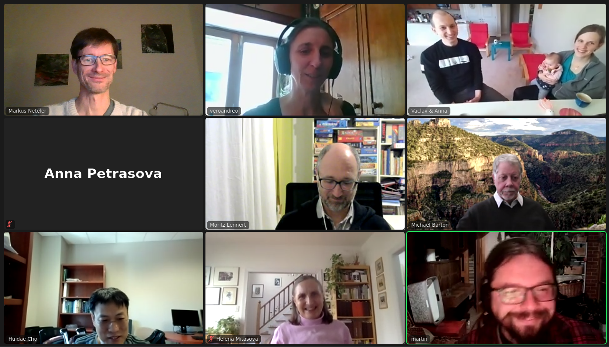
Scientific Foundation
- references to papers associated with modules
- references to related scientific papers
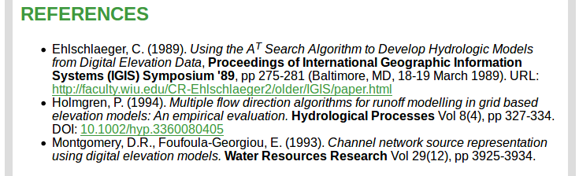
Access to Source Code
Documentation links to relevant parts of the source code.
by Luca Delucchi
Return of Investment
Learn once, use forever.
- Emphasis on backwards compatibility
- No increasing license fees over time
- Employer-independent and contractor-independent
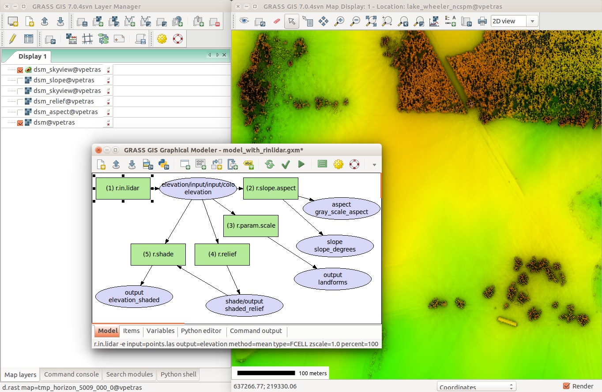
Changes vs Stability
- Graphical user interface changes as needed.
- Python API added in v6, extended in v7.
- Basic things continue to work in the same way.
Raster algebra expression from 2002 (v5) in 2021 (v8):
if((elevation - fill) < 0, 1, 0)
All-in-one
GRASS covers many fields.
- All matured tools available right away
- Download of experimental tools possible
- Hydrology, remote sensing, lidar, network analysis, …

GRASS GIS 8.0.0
- Roadmap:
- 7.8.5 December 2020
- 7.8.6 Spring 2021
- 8.0.0 Spring 2021
- Presented here
- GDAL support
- PROJ support
- 8.0.1 Summer 2021
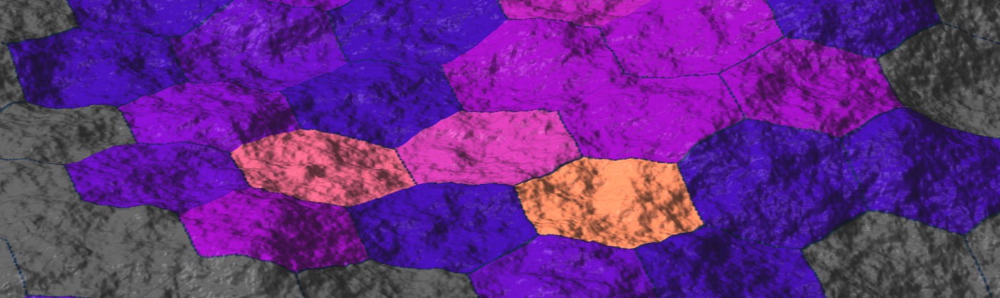
Dark Theme Support
Interface respects system dark theme. 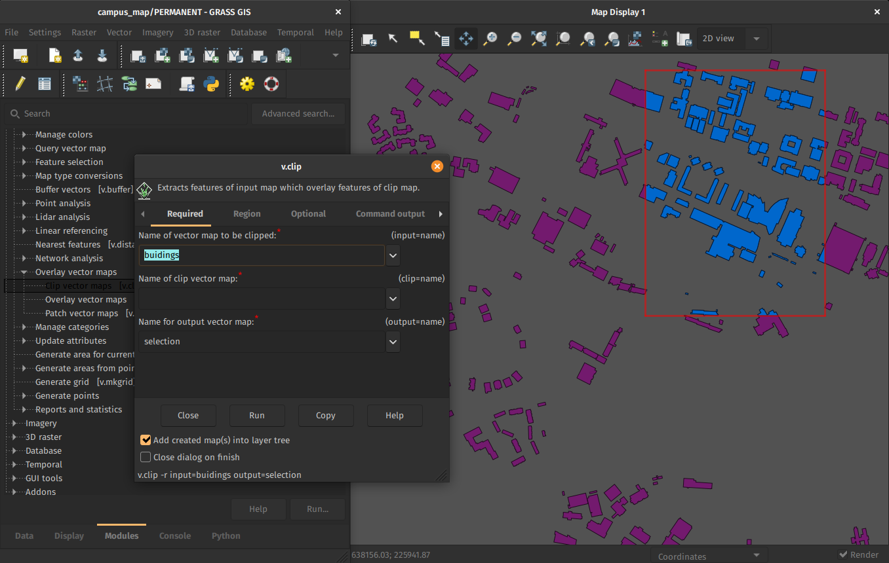by Anna Petrasova, Nicklas Larsson
First-time User Experience
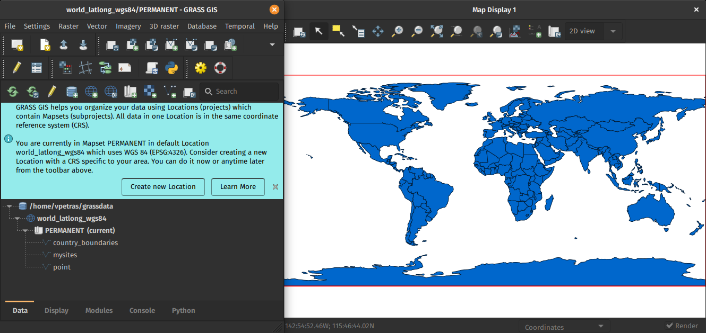by Linda Kladivova
Data Management
All data manipulation centered around revamped Data tab.
by Linda Kladivova, Anna Petrasova, Vaclav Petras
Skeletons and Centerlines
v.voronoi tool can now create area skeletons and centerlines. 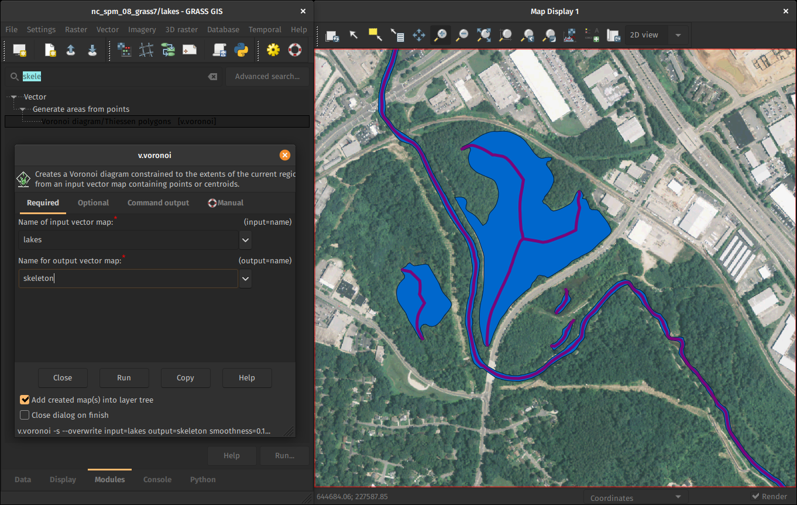by Markus Metz
Faster External Data Links
r.external links (opens) external raster data (GeoTiffs, …) faster.(2-5 × faster, or almost zero for some workflows)
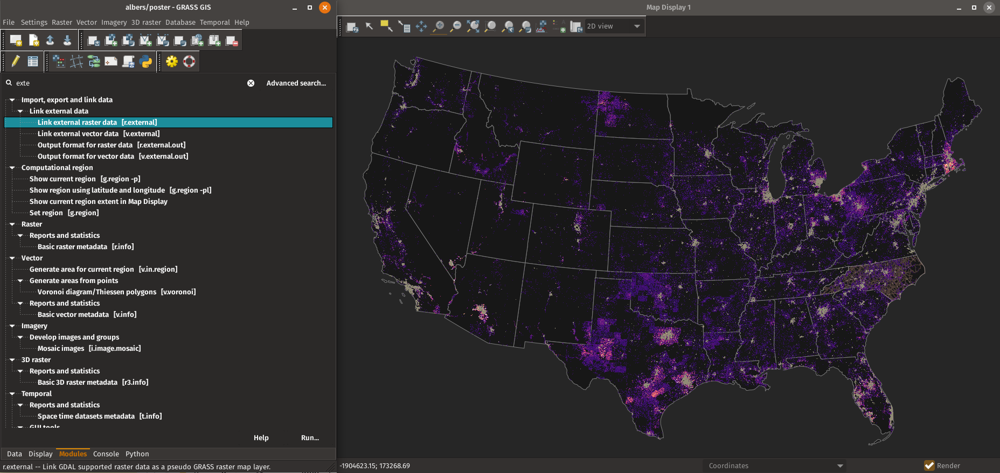
by Markus Metz
Great for workflows when only portion of the data is processed in GRASS GIS.
GitHub-centered Software Development
- "Fork me on GitHub"
- Filling out issues (tickets) requires only GitHub login
- All issues publicly visible

Open a issue
Documentation links to relevant parts of the source code.
Tests of Proposed Changes
- To propose a change, contributor opens a pull request (PR)
- Continuous integration (CI) in GitHub Actions runs checks
- Checks of code quality, standards, functionality before code
- Manual evaluation, testing and feedback
- Repeat as needed
Support
- Community support
- user mailing list (archived since 1991)
- GIS StackExchange
- …
- Commercial support
- Hire a GRASS GIS power user or developer
NCSU CGA Support
research software engineering as a service
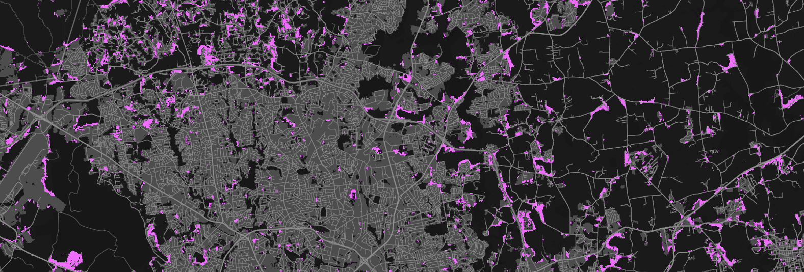by NC State Center for Geospatial Analytics
FUTURES
r.futures - set of modules for urban growth modeling
by NC State Center for Geospatial Analytics
See poster: FUTURES v2: Urban Growth Modeling at Scale
PoPS
r.pops.spread - Pest or Pathogen Spread simulation
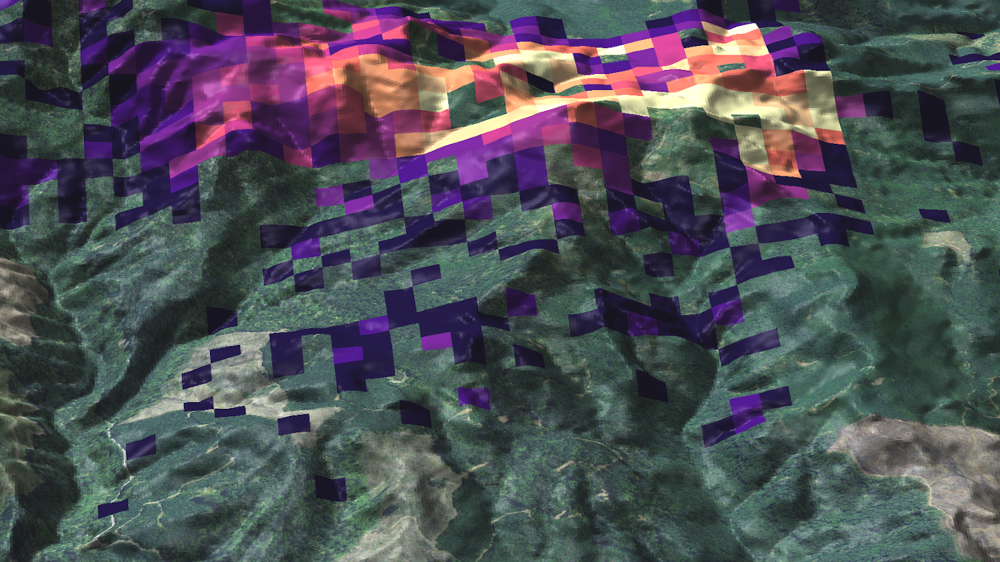by NC State Center for Geospatial Analytics
Valley Bottom Flatness
r.valley.bottom - Multi-resolution Valley Bottom Flatness (MrVBF) index
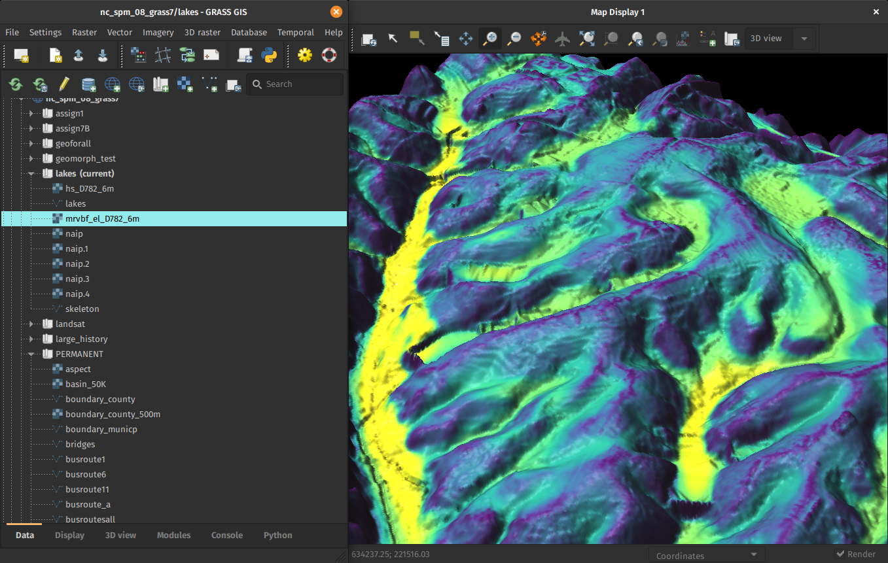by Helmut Kudrnovsky, Steven Pawley
Resources
- Documentation:
- Tutorials:
-
Books:
- Open Source GIS: A GRASS GIS Approach
- Tangible Modeling with Open Source GIS
- GIS-based Analysis of Coastal Lidar Time-Series
- Open Source Approaches to Spatial Data Handling
Install GRASS GIS for free with this link in next 24 hours: grass.osgeo.org
Twitter: vaclavpetras
LinkedIn: Vaclav Petras
Thank you for Attending - This Session Has Ended